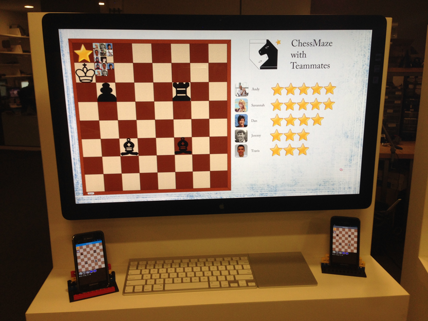

Many of us who enjoy what we do were motivated by an event or person that inspired us to learn, challenge, and question. We are building applications that attempt to convey that epiphany through cooperative learning and exploration. This year's work centers around ChessMaze, a strategic thinking game built in collaboration with International Chess Grand Master Maurice Ashley. ChessMaze challenges novices to learn the game as a team, and to develop generalizable strategic thinking. While playing their solo games, individual players contribute to a team database, where the same moves are grouped together, sorted based on popularity, and presented back to the community of players on a heat map.
